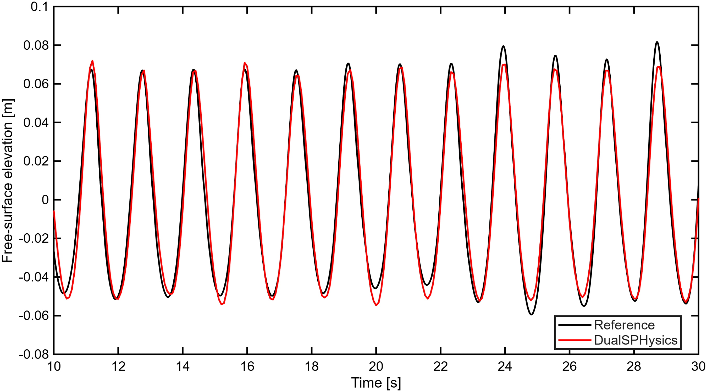
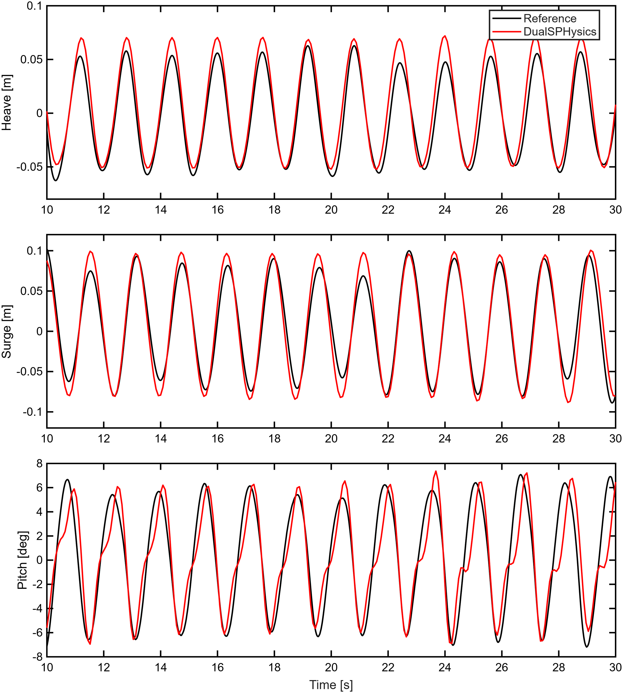
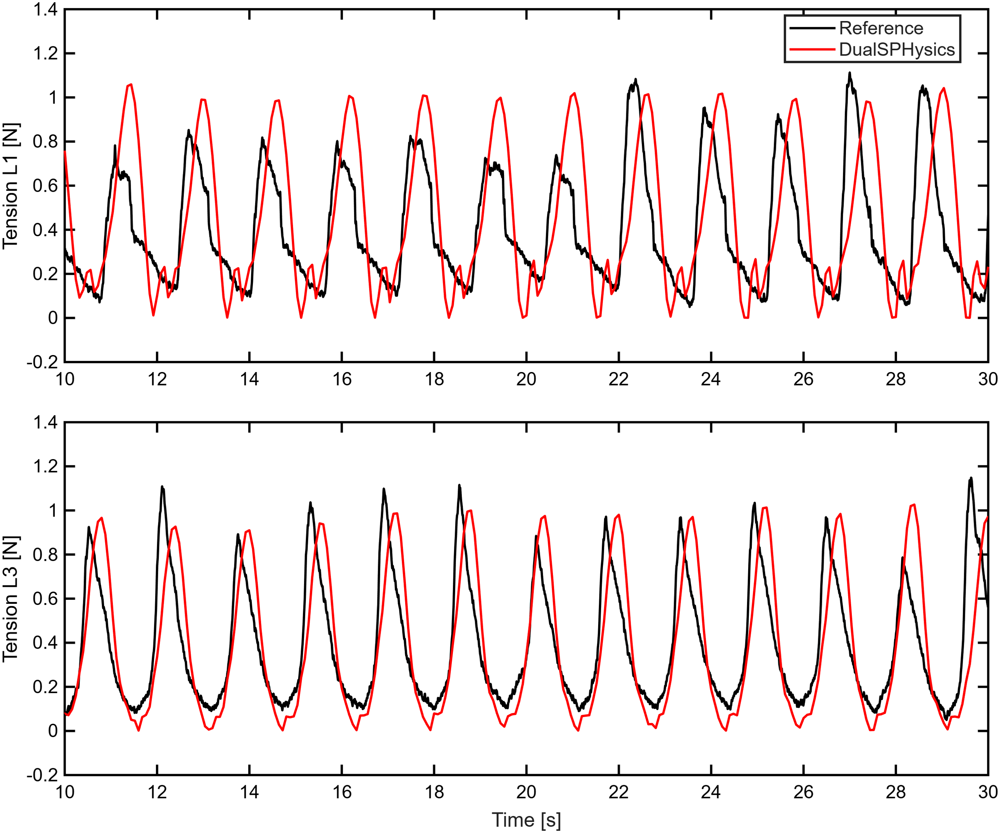

Moored Box¶
Under review by Bonaventura Tagliafierro
This benchmark considers three-dimensional wave interaction with a floating box restrained by four mooring chains, using the current DualSPHysics v6 and MoorDynPlus configuration. It couples SPH fluid loading, rigid-body motion and dynamic mooring-line response. A piston generates regular waves along X, a floating box is centred initially at X=Y=0, and four lines connect its corners to fixed seabed anchors. Y is transverse and Z is vertical, with still water at Z=0 and the floor at Z=−0.50 m.
The experimental context is Domínguez et al. (2019), which considers moored floating structures under regular-wave forcing. The intended comparisons concern incident wave elevation, floating-body motions and mooring tensions. These are validation objectives, not completed comparisons of the present v6 case. The current nominal inputs are 0.12 m wave height and 1.60 s period at 0.50 m depth; their correspondence with the publication's W1 condition remains to be established.
The distribution directory is DualSPHysics_v6.0/examples/benchmarks/07_MooredBox/.
What's Covered in This Tutorial
- Three-dimensional tank and floating-box geometry with geometry-based boundary normals
- Second-order piston wave generation and passive damping
- Internal floating-body dynamics coupled to four MoorDynPlus mooring lines
- Mooring-line properties, connections and data exports
- Wave-elevation extraction, body-motion outputs and planned experimental comparisons
Video pending – Moored Box benchmark simulation.
Case Configuration¶
Case Files¶
| File | Role |
|---|---|
MooredBox_Def.xml |
Geometry, floating body, wavemaker, embedded MoorDynPlus model and execution parameters |
wMooredBox_win64_GPU.bat |
Current Windows GPU generation, simulation and post-processing sequence |
elevation.txt |
Two external MeasureTool sampling-line definitions |
The directory also contains a Windows shortcut, local experimental reference material and numerical output. MoorDynPlus is configured within the case XML; the external-file alternative in a comment is inactive. The extracts below require their named parent sections and are not standalone cases.
Geometry Definition¶
Nominal Dimensions and Resolution¶
This initial contiguous extract from casedef/geometry/predefinition defines the wave inputs, domain and nominal box dimensions:
<newvarcte depth="0.50" _rem="Water level (floor at z=-depth, SWL at z=0)" />
<newvarcte wavePeriod="1.60" waveH="0.12" _rem="Wave parameters: Period and Wave height" />
<newvarcte regularWaves="20" />
<newvarcte timeMax="regularWaves*wavePeriod" />
<newvarcte timeOut="wavePeriod/20" />
<newvarcte waveLenght="wavelength(9.81,depth,wavePeriod)" />
<newvarcte pistonPosition="-2.0*waveLenght" />
<newvarcte domainDown="pistonPosition-4*waveH" />
<newvarcte domainUp="0.1*waveLenght" />
<newvarcte domainBeach="domainUp+1*waveLenght" />
<newvarcte tankTop="3*waveH" _rem="Top of the tank walls above SWL" />
<!-- Floater (centred at x=0, y=0) -->
<newvarcte BoxLength="0.20" />
<newvarcte BoxWidth="0.20" />
<newvarcte BoxHeight="0.132" />
<newvarcte initialDraftBox="-0.079" _rem="z of the floater bottom" />
<newvarcte CogZ="-0.03" _rem="z of the centre of gravity for the nominal floater" />
Nominal box length and width are both 0.20 m, height is 0.132 m and bottom elevation is −0.079 m. The nominal centre-of-gravity elevation is specified separately as CogZ=-0.03; it is not assumed to be the geometric centre. These initial coordinates are not evidence of hydrostatic or mooring equilibrium.
The following separate source extract defines resolution and mooring layout variables:
<newvarcte domainWidthY="1.00" />
<!-- Dp ~ BoxLength/20 -->
<newvar Dp="BoxLength/12" />
<setvar Dp="depth/floor(depth/(Dp)+0.5)" />
<newvarcte Dpm="Dp/2" />
<!-- Line info -->
<newvarcte AnchorXdist="1.385" />
<newvarcte AnchorYdist="0.423" />
<newvarcte InitialLenghtFront="1.455" />
<newvarcte InitialLenghtBack="1.455" />
<newvarcte FairleadZ="-0.0736" _rem="z of the fairleads for the nominal floater" />
The active resolution expression starts at BoxLength/12, despite the preceding approximate comment. The depth-fit adjustment gives Dp=0.50/30=0.016666666… m and Dpm=Dp/2. The transverse tank width is 1 m; this is a 3-D domain with sidewalls, not a 2-D reduction or a periodic-Y configuration.
The dispersion-based expression wavelength(9.81,depth,wavePeriod) gives approximately 3.07813 m. The nominal piston is at minus two wavelengths. Real surfaces are rounded to the particle grid independently of these nominal values:
<newvarcte PistonX="floor(pistonPosition/Dp+0.5)*Dp" />
<newvarcte BeachX="floor(domainBeach/Dp+0.5)*Dp" />
<newvarcte TopZ="floor(tankTop/Dp+0.5)*Dp" />
<newvarcte Tankpy1="-floor(domainWidthY/2/Dp+0.5)*Dp" Tankpy2="floor(domainWidthY/2/Dp+0.5)*Dp" />
<newvarcte FloatX1="floor(-BoxLength/2/Dp+0.5)*Dp" FloatX2="floor(BoxLength/2/Dp+0.5)*Dp" />
<newvarcte FloatY1="floor(-BoxWidth/2/Dp+0.5)*Dp" FloatY2="floor(BoxWidth/2/Dp+0.5)*Dp" />
<newvarcte FloatZ1="floor(initialDraftBox/Dp+0.5)*Dp" FloatZ2="floor((initialDraftBox+BoxHeight)/Dp+0.5)*Dp" />
<!-- Fairleads and centre of gravity keep their position relative to the floater bottom -->
<newvarcte FairleadZR="FloatZ1+(FairleadZ-initialDraftBox)" />
<newvarcte CogZR="FloatZ1+(CogZ-initialDraftBox)" />
The rounded piston face is approximately X=−6.15 m, the downstream wall is at BeachX≈3.38333 m, and the top is at Z≈0.366667 m. The rounded box surfaces are X,Y=±0.10 m and Z=−0.0833333 to 0.05 m. Its rounded height therefore differs slightly from its nominal 0.132 m height. The fairlead and mass-centre elevations preserve their nominal offsets from the box bottom: FairleadZR≈−0.0779333 m and CogZR≈−0.0343333 m.
These are evaluations of configured expressions, not measured GenCase positions or generated particle counts. The XML places particle centres half a spacing from the real surfaces and defines a larger bounding grid:
<definition dp="#Dp">
<pointref x="#PminX" y="#PminY" z="#PminZ" comment="Origin of the particle grid: same as pointmin" />
<pointmin x="#PminX" y="#PminY" z="#PminZ" />
<pointmax x="#PmaxX" y="#PmaxY" z="#PmaxZ" />
</definition>
Tank, Piston and Floating Particles¶
The GeometryForNormals list draws the fixed right wall, bottom and two sidewalls with mkbound=0, a piston face with mkbound=10, and the box with mkbound=50. It exports the boundary shapes before resetting drawing. The main particle list then uses tank layers 0,1,2,3,4, a solid piston and a solid floating box. Marker values here are boundary labels, not generated global MK values.
The floating-particle draw is:
<drawbox>
<boxfill>solid</boxfill>
<point x="#FloatX1+Dpm" y="#FloatY1+Dpm" z="#FloatZ1+Dpm" />
<endpoint x="#FloatX2-Dpm" y="#FloatY2-Dpm" z="#FloatZ2-Dpm" />
</drawbox>
The inward Dpm offsets apply to particle centres; they do not change the nominal box dimensions. Drawing the box before the void fill prevents fluid being seeded in its occupied volume:
<fillbox x="#PistonX+Dpm+5*Dp" y="#Dpm" z="#-Dpm-2*Dp">
<modefill>void</modefill>
<point x="#PistonX" y="#Tankpy1" z="#-depth" />
<size x="#BeachX-PistonX" y="#Tankpy2-Tankpy1" z="#depth" />
</fillbox>
The fill spans the piston-to-downstream-wall region, both sidewalls and the −depth to zero water column. Its seed is inside that volume. Generated fluid counts and final particle bounds require GenCase output and are not asserted here.
Boundary normals are configured from the case's exported actual geometry:
<normals>
<distanceh value="2.0" comment="Maximum distance (H*distanceh) to compute normals data (default=2)" />
<geometryfile file="[CaseName]_hdp_Actual.vtk" comment="File with boundary geometry (VTK format). Use NONE to ignore it." />
</normals>
This VTK is a geometry-generation product referenced through [CaseName], not an extra hand-supplied mesh. distanceh=2.0 controls the normal-data search range. The simulation domain retains generated minimum/maximum bounds, extending its upper Z limit:
<simulationdomain comment="Defines domain of simulation (default=Uses minimum and maximum position of the generated particles)">
<posmin x="default" y="default" z="default" comment="e.g.: x=0.5, y=default-1, z=default-10%" />
<posmax x="default" y="default" z="default + 20%" />
</simulationdomain>
Wave Generation¶
The moving-boundary object assigns marker 10 a null base motion; the wave-paddle module supplies the piston displacement:
<motion>
<objreal ref="10">
<begin mov="1" start="0" />
<mvnull id="1" />
</objreal>
</motion>
This contiguous extract ends before the separate feedback-control subsection:
<mkbound value="10" comment="Mk-Bound of selected particles" />
<waveorder value="2" comment="Order wave generation 1:1st order, 2:2nd order (def=1)" />
<start value="0" comment="Start time (def=0)" />
<duration value="0" comment="Movement duration, Zero is the end of simulation (def=0)" />
<depth value="#depth" comment="Fluid depth (def=0)" />
<pistondir x="1" y="0" z="0" comment="Movement direction (def=(1,0,0))" />
<waveheight value="#waveH" comment="Wave height" />
<waveperiod value="#wavePeriod" comment="Wave period" />
<phase value="0" comment="Initial wave phase in function of PI (def=0)" />
<ramp value="5" comment="Periods of ramp (def=0)" />
<savemotion periods="30" periodsteps="20" xpos="#abs(PistonX)" zpos="-0.26" comment="Saves motion data. xpos and zpos are optional. zpos=-depth of the measuring point" />
The piston generates second-order regular waves along +X, starting at time zero, with zero phase and a five-period ramp: nominally 5×1.60=8 s. duration=0 means movement continues to the simulation end. The selected depth, height and period remain the source expressions #depth, #waveH and #wavePeriod.
savemotion requests 30 periods at 20 subdivisions per period, with the horizontal theoretical observation distance abs(PistonX) and vertical coordinate −0.26 m. It requests wavemaker/theory diagnostic data; theoretical elevations are not measured numerical free-surface results, and the requested diagnostic span is distinct from the 32 s simulation duration. Realised incident waves require numerical sampling and validation.
Wavemaker Feedback¶
AWAS is disabled in the current configuration. The piston therefore uses the prescribed regular-wave generation without active free-surface feedback or drift correction. The inactive feedback settings are not included here; passive damping is configured separately below.
Passive Damping¶
The downstream damping zone is independent of feedback at the wavemaker:
<damping>
<dampingzone>
<limitmin x="#1*domainUp" y="0" z="0" comment="minimum reduction is applied" />
<limitmax x="#BeachX" y="0" z="0" comment="maximum reduction is applied" />
<overlimit value="0" />
<redumax value="7" />
</dampingzone>
</damping>
The reduction increases from domainUp=0.1*waveLenght≈0.307813 m to BeachX≈3.38333 m, with redumax=7 and no over-limit extension. It acts downstream of the box. Its presence is not proof of a measured reflection coefficient.
Floating-body Properties and Dynamics¶
<floatings>
<floating mkbound="50">
<massbody value="3.163" />
<center x="0" y="0" z="#CogZR" />
<!-- <inertia x="0.015" y="0.015" z="0.021" /> -->
<inertia x="0.015" y="0.015" z="0.019" />
</floating>
</floatings>
One floating body uses mkbound=50, mass 3.163 kg and centre (0,0,#CogZR). The active principal inertias are (0.015, 0.015, 0.019) kg·m². The alternative inertia inside the source comment is not selected. No separate body-density property is prescribed; the mass must not be replaced by a guessed density.
No initial rotation, translational/angular velocity or degree-of-freedom restriction is explicitly prescribed in this block. The configured box is axis-aligned; it is not constrained to a single response mode. FtPause=0.0 imposes no initial SPH floating freeze. The selected RigidAlgorithm=FREE uses the internal collision-free floating-body dynamics, not Chrono. MoorDynPlus supplies mooring forces to that body; it does not replace the SPH rigid-body integrator or prescribe its trajectory.
Hydrodynamic particle forces and weight contribute to body acceleration; mooring connection forces contribute both a resultant and a moment about the body centre. The line system can restrain translations and rotations through these forces, without imposing a rigid kinematic lock. No natural period, pretension, settled draft or validated equilibrium follows merely from this initial definition.
MoorDynPlus Coupling¶
Embedded Model and Body Association¶
The coupling controls and selected floating body are separate from the nested line solver:
<savevtk_moorings value="true" comment="Saves vtk with moorings (default=true)" />
<savevtk_lines value="true" comment="Saves vtk with mooring lines (default=true)" />
<savecsv_points value="true" comment="Saves csv with link points (default=true)" />
<savevtk_points value="false" comment="Saves vtk with link points (default=false)" />
<mooredfloatings>
<floating mkbound="50" comment="Mkbound of the Floating body the mooring is linked to" />
</mooredfloatings>
mooredfloatings/floating mkbound=50, the nested body ref=50 and every line's vesselconnection bodyref=50 all refer to this same body. The active nested moordynplus has no file attribute, so the model is read from the main case XML. No standalone mooring input is required by this configuration. See the MoorDynPlus XML Guide for the general v6 interface.
<bodies>
<body ref="50" comment="Floating driven structure to attach mooring lines."/>
</bodies>
The coupling passes moving fairlead positions and velocities to MoorDynPlus. Its integrated line model returns fairlead force vectors, which are applied at those points and assembled into the body's force and moment. This exchange is part of the GPU solver, not a separate executable in the BAT. In the inspected implementation the line update follows the non-predictor floating/force-point update; no monolithic or iteratively converged coupling is claimed.
No explicit coupling start is supplied: the reader defaults the force-start time and ramp duration to zero. No sphfluidvel option is supplied: direct SPH fluid-velocity interpolation to the line nodes defaults to false. This is distinct from SPH loading of the box and from hydrodynamic added mass/drag in the line model.
Four-chain Arrangement¶
The four active line definitions are copied continuously from moordynplus/lines, after their shared defaults:
<line>
<!-- line back -->
<vesselconnection bodyref="50" x="#FloatX2" y="#FloatY2" z="#FairleadZR" />
<fixconnection x="#AnchorXdist" y="#AnchorYdist" z="#-depth" />
<length value="#InitialLenghtBack" comment="Unstretched length." units_comment="(m)"/>
<segments value="40" />
</line>
<line>
<!-- line back -->
<vesselconnection bodyref="50" x="#FloatX2" y="#FloatY1" z="#FairleadZR" />
<fixconnection x="#AnchorXdist" y="#-AnchorYdist" z="#-depth" />
<length value="#InitialLenghtBack" comment="Unstretched length." units_comment="(m)"/>
<segments value="40" />
</line>
<line>
<!-- line 2 -->
<vesselconnection bodyref="50" x="#FloatX1" y="#FloatY2" z="#FairleadZR" />
<fixconnection x="#-AnchorXdist" y="#AnchorYdist" z="#-depth" />
<length value="#InitialLenghtFront" comment="(m)"/>
<segments value="40" />
</line>
<line>
<!-- line 3 -->
<vesselconnection bodyref="50" x="#FloatX1" y="#FloatY1" z="#FairleadZR" />
<fixconnection x="#-AnchorXdist" y="#-AnchorYdist" z="#-depth" />
<length value="#InitialLenghtFront" comment="(m)"/>
<segments value="40" />
</line>
The XML has no explicit line or endpoint identifier attributes. The following identifiers are zero-based library line indices assigned in source order, not experimental sensor numbers. The reader orders each fixed–vessel line from fixed anchor at node 0 to fairlead at node 40, even though its XML lists the vessel connection first.
| Library line | Source arrangement | Fixed anchor (X,Y,Z), m | Body-50 attachment (X,Y,Z), m | Unstretched length | Segments |
|---|---|---|---|---|---|
| 0 | Back, +Y | (1.385, 0.423, −0.50) | (FloatX2, FloatY2, FairleadZR) |
#InitialLenghtBack = 1.455 m |
40 |
| 1 | Back, −Y | (1.385, −0.423, −0.50) | (FloatX2, FloatY1, FairleadZR) |
#InitialLenghtBack = 1.455 m |
40 |
| 2 | Front, +Y | (−1.385, 0.423, −0.50) | (FloatX1, FloatY2, FairleadZR) |
#InitialLenghtFront = 1.455 m |
40 |
| 3 | Front, −Y | (−1.385, −0.423, −0.50) | (FloatX1, FloatY1, FairleadZR) |
#InitialLenghtFront = 1.455 m |
40 |
FloatX1=FloatY1=−0.10 m, FloatX2=FloatY2=0.10 m and FairleadZR≈−0.0779333 m give the configured initial global attachment coordinates. They are not offsets from the centre of gravity to be added a second time. Fairleads follow the body's subsequent motion; anchors remain fixed. The first pair is explicitly commented “back”; the second pair uses the source's front-length expression. This verifies the numerical front/back grouping, not which experimental chain was instrumented or how experimental loads were combined.
No shared dynamic connection, explicit pretension target, line-breaking threshold or separate material type is specified. Equal lengths, segment counts and inherited properties are verified from these definitions, rather than assumed from geometric symmetry.
Shared Line Properties¶
<linedefault comment="Shared properties for each line.">
<ea value="2.9e1" comment="Line stiffness, product of elasticity modulus and cross-sectional area." units_comment="N"/>
<diameter value="3.656e-3" comment="Volume-equivalent diameter of the line." units_comment="m"/>
<massDenInAir value="0.0607" comment="Mass per unit length of the line." units_comment="kg/m"/>
<ba value="-0.8" comment="Line internal damping (BA/-zeta). (default=-0.8)" units_comment="Ns"/>
<can value="1.60" comment="Transverse added mass coefficient (with respect to line displacement). (default=1.0)"/>
<cat value="0.0" comment="Tangential added mass coefficient (with respect to line displacement). (default=0.0)"/>
<cdn value="1.50" comment="Transverse drag coefficient (with respect to frontal area, d*l). (default=1.6)"/>
<cdt value="0.00" comment="Tangential drag coefficient (with respect to surface area, π*d*l). (default=0.05)"/>
<outputFlags value="p" comment="Node output properties.(default=-) [-:None|p:Positions|v:Telocities|U:Wave Velocities|t:Tension|D:Hydrodynamic Drag Force|c=Internal Damping|s:Strain of each segment|d: rate of strain of each segment]"/>
</linedefault>
All four lines inherit this same definition:
| Setting | Selected value | Meaning |
|---|---|---|
ea |
29 N | Axial stiffness EA, not Young's modulus alone |
diameter |
0.003656 m | Volume-equivalent line diameter |
massDenInAir |
0.0607 kg/m | Mass per unstretched line length |
ba |
−0.8 | Negative input selects damping-ratio interpretation, ζ=0.8; not negative physical viscous damping |
can, cat |
1.60, 0.0 | Transverse/tangential added-mass coefficients |
cdn, cdt |
1.50, 0.00 | Transverse/tangential drag coefficients |
outputFlags |
p |
Node positions; it does not request node-tension files |
The line model is a lumped-mass spring–damper representation with 40 segments per line and 41 nodes, including both endpoints. The negative ba is converted internally using segment length and line elastic/mass properties. The source's units comment is retained verbatim; ζ itself is dimensionless. The four lines have the same inherited coefficients, but equal instantaneous forces are not implied.
Mooring Environment and Initialisation¶
<solverOptions>
<waterDepth value="#depth" comment="Water depth" units_comment="m"/>
<freesurface value="0" comment="Z position of the water free surface.(default=0)" />
<kBot value="3.0e6" comment="Bottom stiffness constant. (default=3.0e6)" units_comment="Pa/m"/>
<cBot value="3.0e5" comment="Bottom damping constant. (default=3.0e5)" units_comment="Pa*s/m" />
<dtM value="0.001" comment="time step to use in mooring integration. (default=0.001)"/>
<waveKin value="0" comment="Wave kinematics flag ( 0: neglect [the only option currently supported] ). (default=0)"/>
<writeUnits value="yes" comment="Write units line. value=[yes|no]. (default=yes)"/>
<frictionCoefficient value="0" comment="General bottom friction coefficient, as a start. (default=0.0)"/>
<fricDamp value="200" comment="Damping coefficient used to model the friction with speeds near zero. (default=200.0)"/>
<statDynFricScale value="1.0" comment="Ratio between static and dynamic friction (mu_static/mu_dynamic). (default=1.0)"/>
<dtIC value="1.0" comment="Period to analyse convergence of dynamic relaxation for initial conditions. (default=1.0)" units_comment="s"/>
<cdScaleIC value="2" comment="Factor to scale drag coefficients during dynamic relaxation for initial conditions. (default=5)"/>
<threshIC value="0.001" comment="Convergence threshold for for initial conditions. (default=0.001)"/>
<tmaxIC value="1" comment="Maximum time for initial conditions without convergence.(default=0)" units_comment="s"/>
</solverOptions>
Mooring water depth is #depth=0.50 m, with free surface at zero and a flat bottom at −0.50 m. Seabed contact uses stiffness kBot=3.0e6 Pa/m and damping cBot=3.0e5 Pa·s/m. Line contact defaults to enabled in the inspected reader. Bottom friction coefficient is explicitly zero; fricDamp=200 and statDynFricScale=1.0 must not be represented as evidence of nonzero Coulomb friction.
The internal mooring integration uses second-order Runge–Kutta substeps. dtM=0.001 s is an upper bound because omitted auto defaults to true; the library can reduce substeps from line/contact conditions. It is not the SPH step or the saved-data interval. waveKin=0 requests no prescribed library wave kinematics. With direct SPH velocity interpolation also absent, wave-paddle motion is not an imposed line-node wave-velocity field. Line hydrodynamic coefficients remain separate from the box's SPH fluid forces.
Initial dynamic relaxation is configured with analysis interval dtIC=1.0 s, drag multiplier cdScaleIC=2, relative convergence threshold threshIC=0.001 and maximum relaxation time tmaxIC=1 s. Relaxation holds the supplied fairlead configuration while settling lines; it does not certify equilibrium of the coupled floating box. Successful relaxation convergence and equilibrium of the coupled box have not been established in this documentation review. The mooring reader's omitted water-density setting defaults to 1000 kg/m³, distinct from the explicitly configured SPH reference density 998 kg/m³.
Numerical Parameters¶
The constant configuration is:
<constantsdef>
<gravity x="0" y="0" z="-9.81" comment="Gravitational acceleration" units_comment="m/s^2" />
<rhop0 value="998" comment="Reference density of the fluid" units_comment="kg/m^3" />
<rhopgradient value="3" comment="Initial density gradient 1:Rhop0, 2:Water column, 3:Max. water height (default=2)" />
<hswl value="0" auto="true" comment="Maximum still water level to calculate speedofsound using coefsound" units_comment="metres (m)" />
<gamma value="7" comment="Polytropic constant for water used in the state equation" />
<speedsystem value="0" auto="true" comment="Maximum system speed (by default the dam-break propagation is used)" />
<coefsound value="20" comment="Coefficient to multiply speedsystem" />
<speedsound value="0" auto="true" comment="Speed of sound to use in the simulation (by default speedofsound=coefsound*speedsystem)" />
<coefh value="1.3" comment="Coefficient to calculate the smoothing length (h=coefh*sqrt(3*dp^2) in 3D)" />
<cflnumber value="0.2" comment="Coefficient to multiply dt" />
</constantsdef>
The source uses gravity (0,0,−9.81) m/s², reference fluid density 998 kg/m³, density-gradient option 3, coefh=1.3, CFL coefficient 0.2 and automatically calculated sound speed with multiplier 20. These settings are independent of the mooring environment defaults.
The first continuous parameter extract gives boundary, integration and fluid-treatment settings:
<parameter key="Boundary" value="mDBC" comment="Boundary method: DBC, mDBC, MIX:MixBC (default=DBC)" />
<parameter key="SlipMode" value="FS" comment="Slip mode for mDBC: NS:No-slip, FS:Free slip, V0:TanVel=0, M22:mDBC 2022 (default=NS)" />
<parameter key="NoPenetration" value="N" comment="Activate No-Penetration option for mDBC: Y/N (default=N)" />
<parameter key="StepAlgorithm" value="SYM" comment="Step Algorithm: SYM:Symplectic, VER:Verlet (default=SYM)" />
<parameter key="VerletSteps" value="40" comment="Verlet only: Number of steps to apply Euler timestepping (default=40)" />
<parameter key="Kernel" value="WC2" comment="Interaction Kernel: WC2:WendlandC2, WC6:WendlandC6 (default=WC2)" />
<parameter key="ViscoTreatment" value="LAM" comment="Viscosity formulation: LAM:Laminar, ART:Artificial (default=LAM)" />
<parameter key="Visco" value="1e-06" comment="Viscosity value. Typically 0.01 for Artificial and 1e-6 m^2/s (water kinematic viscosity) for Laminar" />
<parameter key="ViscoBoundFactor" value="1" comment="Multiply viscosity value with boundary (default=1)" />
<parameter key="Turbulence" value="NO" comment="Turbulence model: NO:None, SPS:Sub-particle scale (default=NO)" />
<parameter key="DensityDT" value="FO" comment="Density Diffusion Term: NO:None, FO:Fourtakas (default=NO)" />
<parameter key="DensityDTvalue" value="0.10" comment="DDT value (default=0.1)" />
<parameter key="DivCleanKp" value="#CoefSound" comment="Kappa parameter for Divergence Cleaning (equal to coefsound) (default=0)" />
Boundary=mDBC and SlipMode=FS select free-slip modified dynamic boundary treatment; NoPenetration=N disables that additional option. The normal geometry includes tank, piston and floating box; no per-body boundary-method override is present. RigidAlgorithm=FREE governs collision treatment for the floating body, not a replacement boundary formulation for the fluid.
Time integration is symplectic (SYM) with Wendland C2 (WC2). VerletSteps=40 is an inactive companion for the unselected Verlet scheme. Laminar viscosity is selected with kinematic coefficient 1×10⁻⁶ m²/s, boundary multiplier 1 and no SPS turbulence. It must not be described as artificial viscosity with coefficient 0.01.
DensityDT=FO selects Fourtakas diffusion with coefficient 0.10; see Fourtakas et al. (2019). DivCleanKp=#CoefSound retains its source expression for the divergence-cleaning coefficient; it is not a wave-measurement parameter.
The next extract separates advanced shifting and body integration:
<parameter key="Shifting" value="4" comment="Shifting mode 0:None, 1:Ignore bound, 2:Ignore fixed, 3:Full, 4:Full advanced (default=0)" />
<parameter key="ShiftCoef" value="-0.2" comment="Coefficient for standard shifting computation (default=-2)" />
<parameter key="ShiftTFS" value="2.75" comment="Threshold to detect free surface. Typically 1.5 for 2D and 2.75 for 3D (default=0)" />
<parameter key="ShiftAdvCoef" value="-0.01" comment="Coefficient for advanced shifting computation (default=-0.01)" />
<parameter key="ShiftAdvALE" value="N" comment="ALE formulation for advanced shifting: Y/N (default=N)" />
<parameter key="ShiftAdvNCPress" value="N" comment="Non conservative pressure formulation for advanced shifting: Y/N (default=N)" />
<parameter key="RigidAlgorithm" value="FREE" comment="Rigid Algorithm: FREE:collision-free, SPH, DEM, CHR:Chrono collision (default=SPH)" />
<parameter key="FtPause" value="0.0" comment="Time to freeze the floatings at simulation start (warmup) (default=0)" units_comment="seconds" />
<parameter key="FtIgnoreRadius" value="Y" comment="Ignores floating body radius with periodic conditions: Y/N (default=N)" />
Mode 4 activates full advanced shifting with ShiftAdvCoef=-0.01, ALE disabled and non-conservative pressure disabled. The standard-mode companions ShiftCoef=-0.2 and ShiftTFS=2.75 are present in the source but are not the controls read by this selected advanced branch. RigidAlgorithm=FREE is collision-free internal body motion; no Chrono section is configured. FtIgnoreRadius=Y is retained, but does not enable periodic boundaries; no periodicity is defined here.
Time Control and Output¶
<parameter key="CoefDtMin" value="0.001" comment="Coefficient to calculate minimum time step dtmin=coefdtmin*h/speedsound (default=0.05)" />
<parameter key="DtIni" value="#2*Dp/1500" comment="Initial time step. Use 0 to default use (default=h/speedsound)" units_comment="seconds" />
<parameter key="DtMin" value="0" comment="Minimum time step. Use 0 to default use (default=coefdtmin*h/speedsound)" units_comment="seconds" />
<parameter key="DtFixed" value="0" comment="Fixed Dt value. Use 0 to disable (default=disabled)" units_comment="seconds" />
<parameter key="DtFixedFile" value="NONE" comment="Dt values are loaded from file. Use NONE to disable (default=disabled)" units_comment="milliseconds (ms)" />
<parameter key="DtAllParticles" value="N" comment="Velocity of all the particles is used to calculate DT. Y:All, N:Only fluid/floating (default=N)" />
<parameter key="TimeMax" value="#timeMax" comment="Time of simulation" units_comment="seconds" />
<parameter key="TimeOut" value="#timeOut" comment="Time out data" units_comment="seconds" />
<parameter key="TimeOutExtra" value="0.05" />
<parameter key="RhopOutMin" value="700" comment="Minimum density valid (default=700)" units_comment="kg/m^3" />
<parameter key="RhopOutMax" value="1300" comment="Maximum density valid (default=1300)" units_comment="kg/m^3" />
<parameter key="WrnPartsOut" value="Y" comment="Active warning according to number of out particles: Y/N (default=Y)" />
<parameter key="MinFluidStop" value="0" comment="Minimum proportion of initial fluid particles to continue the simulation 0:Never stops, 0.1:Stops when fluid drops to 10%. (default=0)" />
timeMax=20*1.60=32 s and timeOut=1.60/20=0.08 s. The regular particle-data interval is nominally 0.08 s, while TimeOutExtra=0.05 is a separate source setting. The initial-step expression #2*Dp/1500 is preserved; CoefDtMin=0.001 controls the derived minimum step when DtMin=0. Fixed stepping and a fixed-step file are disabled. DtAllParticles=N selects the fluid/floating velocity criterion.
SavePosDouble=Y retains double-precision position output and SaveExtraParts=0 requests no extra restart-particle intervals. Density limits are 700–1300 kg/m³, particle-out warnings are enabled and MinFluidStop=0 disables that fluid-proportion stopping criterion. None of these settings establishes completed execution or numerical accuracy.
Numerical Measurements and Output¶
Wave-elevation Sampling¶
The BAT invokes MeasureTool with this existing input:
POINTSLIST #WG7
0 -0.26 -0.2
0 0 0.001
1 1 400
POINTSLIST #WG3
0 0.36 -0.2
0 0 0.001
1 1 400
#"POINTSLIST"
#BeginX BeginY BeginZ
#StepX StepY StepZ
#CountX CountY CountZ
| Label | Fixed X, m | Fixed Y, m | Z scan |
|---|---|---|---|
| WG7 | 0 | −0.26 | Start −0.20 m, increment 0.001 m, 400 points; last point 0.199 m |
| WG3 | 0 | 0.36 | Start −0.20 m, increment 0.001 m, 400 points; last point 0.199 m |
These are external post-processing lines, not XML solver gauges or feedback sensors. The command selects fluid particles and uses -elevation:0.5. It processes saved particle data; dtM does not prescribe its sampling times.
Both scans are now at X=0, at transverse positions Y=−0.26 and 0.36 m. They lie beside the box rather than inside its footprint. Probe correspondence, datum and disturbance by the body still require verification; these scans do not constitute a separate box-free incident-wave case.
Floating-body Motion¶
FloatingInfo selects global MK 60 in the BAT. This differs from the XML's boundary marker 50; confirm the generated marker metadata before selecting comparison channels. The solver's floating-body records provide centre positions, linear/angular velocities and angular state information for extraction. Exact CSV columns and units must be checked in generated output; numerical files are available, but their provenance and channel mapping require final verification.
The supplied FloatingInfo help distinguishes these numerical quantities:
| Quantity | Meaning and units |
|---|---|
center |
Centre-of-mass position, m |
fvel |
Linear velocity, m/s |
fomega |
Angular velocity, rad/s |
surge, sway, heave |
Centre displacement in X, Y and Z respectively, m |
roll, pitch, yaw |
Rotation about X, Y and Z respectively, degrees |
For this coordinate system, longitudinal translation is X, transverse translation is Y and vertical translation is Z. Rotation components refer to their numerical axes; experimental naming and signs require a reference diagram. Position is not displacement from equilibrium, angular state is not automatically an experimentally defined rotation, and a velocity channel is not a displacement channel. Do not subtract an initial centre, change signs or equate every available degree of freedom with an experimentally measured quantity without verification.
Mooring Tensions and Data Exports¶
<savedata comment="Saves CSV with the connection properties.">
<tension value="true" comment="Stores tensions at the connections.(default: value=false)" />
<force value="true" comment="Stores forces at the connections.(default: value=false)" />
<velocity value="true" comment="Stores velocities at the connections.(default: value=false)" />
<position value="true" comment="Stores positions at the connections.(default: value=false)" />
</savedata>
The library enables connection tension, force, velocity and position CSV output for all four lines. With no nested timing override, the output manager inherits the solver's regular TimeOut=0.08 s schedule; actual timestamps and successful file creation remain to be checked. This differs from the internal line-integration maximum of 0.001 s.
The inspected implementation writes moordynplus_data/MoorDynPlus_tension.csv under the case output directory, with time/dt in seconds and separate scalar tensions in newtons at node 0 and node 40 of each line. Here those are anchor and fairlead endpoints respectively. The scalar endpoint tension uses the library's endpoint resultant definition, including its endpoint weight treatment; it is not an invented total front/rear force or an interior segment stress. The library also defines corresponding MoorDynPlus_force.csv, MoorDynPlus_velocity.csv and MoorDynPlus_position.csv outputs.
The two back lines and two front lines can be identified geometrically, but their experimental sensor correspondence and measured end are unverified. Do not add the two scalar tensions, project force components or equate one endpoint value with a combined experimental front/rear load without the measurement definition.
outputFlags=p requests line-node positions, not node-tension histories. Separate coupling switches request mooring/line VTK and force-point CSV output; force-point VTK is explicitly false, while omitted node-VTK control defaults to true. These visualisation/coupling exports are distinct from the four library connection CSV selections.
Running the Simulation¶
The available BAT defines its current case/output names and executable paths as follows. Defined utility variables do not mean every utility is executed:
set name=MooredBox
set dirout=%name%_out
set diroutdata=%dirout%\data
rem Defines executable paths.
set dirbin=../../../bin/windows
set gencase="%dirbin%/GenCase_win64.exe"
set dualsphysicscpu="%dirbin%/DualSPHysics6.0CPU_win64.exe"
set dualsphysicsgpu="%dirbin%/DualSPHysics6.0_win64.exe"
set boundaryvtk="%dirbin%/BoundaryVTK_win64.exe"
set partvtk="%dirbin%/PartVTK_win64.exe"
set partvtkout="%dirbin%/PartVTKOut_win64.exe"
set measuretool="%dirbin%/MeasureTool_win64.exe"
set computeforces="%dirbin%/ComputeForces_win64.exe"
set isosurface="%dirbin%/IsoSurface_win64.exe"
set flowtool="%dirbin%/FlowTool_win64.exe"
set floatinginfo="%dirbin%/FloatingInfo_win64.exe"
set tracerparts="%dirbin%/TracerParts_win64.exe"
The existing script offers a choice when the output folder exists: delete/re-run, post-process or abort. Its run branch removes the existing case output. Review that choice before future execution; no branch has been executed for this documentation task.
Generation and Simulation¶
rem Executes GenCase to create initial files for simulation.
%gencase% %name%_Def %dirout%/%name% -save:all
if not "%ERRORLEVEL%" == "0" goto fail
rem Executes DualSPHysics to run the SPH simulation.
%dualsphysicsgpu% -gpu %dirout%/%name% %dirout%
if not "%ERRORLEVEL%" == "0" goto fail
GenCase is followed by the GPU solver, using the case prefix under MooredBox_out/. MoorDynPlus initialisation and force exchange occur inside the solver and require a compatible MoorDynPlus-enabled build; there is no separate MoorDyn executable call.
Visualisation and Extraction¶
These active calls follow the solver in the original order:
:postprocessing
rem Executes PartVTK to create VTK files with fluid particles.
set dirout2=%dirout%\particles
%partvtk% -dirdata %diroutdata% -savevtk %dirout2%/PartFluid -onlytype:-all,+fluid -continue:1
if not "%ERRORLEVEL%" == "0" goto fail
rem Executes PartVTKOut to create VTK files with excluded particles.
%partvtkout% -dirdata %diroutdata% -savevtk %dirout2%/PartFluidOut -SaveResume %dirout2%/_ResumeFluidOut
if not "%ERRORLEVEL%" == "0" goto fail
rem Executes BoundaryVTK to create VTK files with floating-body geometry.
set dirout2=%dirout%\boundary
%boundaryvtk% -loadvtk AutoActual -motiondata %diroutdata% -savevtkdata %dirout2%/Box -onlytype:floating
if not "%ERRORLEVEL%" == "0" goto fail
rem Executes FloatingInfo to export the selected floating-body data to CSV files.
set dirout2=%dirout%\floatinginfo
%floatinginfo% -dirdata %diroutdata% -onlymk:60 -savedata %dirout2%/FloatMotion
if not "%ERRORLEVEL%" == "0" goto fail
rem Executes MeasureTool to export the selected measurements to CSV files.
set dirout2=%dirout%\measure
%measuretool% -dirdata %diroutdata% -points elevation.txt -onlytype:-all,+fluid -elevation:0.5 -savecsv %dirout2%/WaveGauge
if not "%ERRORLEVEL%" == "0" goto fail
PartVTK excludes all particle types, then includes fluid particles with -onlytype:-all,+fluid. BoundaryVTK reconstructs floating geometry with the output prefix boundary/Box. FloatingInfo requests floatinginfo/FloatMotion for MK 60, and MeasureTool requests measure/WaveGauge using the supplied scans. These are source prefixes, not assertions that particular CSV leaf names already exist.
The BAT checks errors after every active utility, including PartVTKOut and the final MeasureTool call. IsoSurface is REM-disabled. Static verification of these commands does not establish successful execution of the current source configuration.
Expected Output Organisation¶
Relative location under MooredBox_out/ |
Expected role |
|---|---|
data/ |
Solver particle/body data used by post-processing |
particles/PartFluid… |
Fluid-particle VTK series requested by PartVTK |
boundary/Box… |
Floating-boundary VTK series requested by BoundaryVTK |
floatinginfo/FloatMotion… |
FloatingInfo output prefix |
measure/WaveGauge… |
MeasureTool output prefix |
moordynplus_data/ |
Library mooring-line/connection outputs from the solver |
These locations follow the current BAT and implementation. Available generated XML and Run.out instead record no-slip mDBC and 40 s duration, whereas the current definition selects free-slip and 32 s. The available figures must not be attributed to a verified run of the exact current configuration. Final CPU/Linux script coverage remains a separate packaging review.
Experimental Reference and Validation Requirements¶
The paper's bibliographic record confirms the moored-structure context, but the precise W1 table and instrumented line/sensor arrangement have not been verified from accessible full text. The current depth, nominal height and period therefore identify the numerical configuration directly, without labelling it a confirmed W1 reproduction.
Local reference material includes reference/Dominguez_et_al_2019.pdf and reference/Experimental_Data_Dominguez_2019.xlsx, with the original workbook preserved as Experimental_Data_Dominguez_2019_OLD.xlsx. Experimental probe/body/line correspondence, endpoints, force definitions, signs, datums and time alignment still require final verification. elevation.txt defines numerical scans, not experimental records.
Results and Validation¶
Figure 1 – Incident Wave Conditions¶

Preliminary figure. The numerical results and their comparison with the reference data are pending final verification.
The current X=0 numerical scans are beside the box. Their relationship to the experimental elevation channel must be confirmed; the figure alone does not establish box-free incident-wave conditions.
Figure 2 – Floating-box Motions¶

Preliminary figure. The numerical results and their comparison with the reference data are pending final verification.
Select only response components actually measured in the reference experiment, after confirming numerical marker identity, reference position, signs and time origin. The availability of numerical 3-D body channels does not validate all six degrees of freedom.
Figure 3 – Mooring-line Tensions¶

Preliminary figure. The numerical results and their comparison with the reference data are pending final verification.
Resolve the line-to-sensor and fairlead/anchor correspondence before plotting. No combined load is constructed from individual chain outputs without the experimental observable definition.
The supplied PNGs are copied unchanged. Their presence does not establish current-configuration agreement, settled equilibrium, convergence or physical validation. Final comparison verification and video remain pending.
References¶
◆ Domínguez, J. M., Crespo, A. J. C., Hall, M., Altomare, C., Wu, M., Stratigaki, V., Troch, P., Cappietti, L., & Gómez-Gesteira, M. (2019). SPH simulation of floating structures with moorings. Coastal Engineering, 153, 103560 (article number). https://doi.org/10.1016/j.coastaleng.2019.103560
◆ Fourtakas, G., Domínguez, J. M., Vacondio, R., & Rogers, B. D. (2019). Local Uniform Stencil (LUST) boundary condition for arbitrary 3-D boundaries in parallel smoothed particle hydrodynamics (SPH) models. Computers & Fluids, 190, 346–361. https://doi.org/10.1016/j.compfluid.2019.06.009